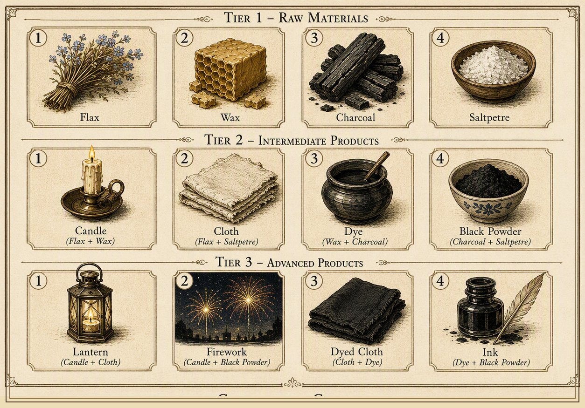
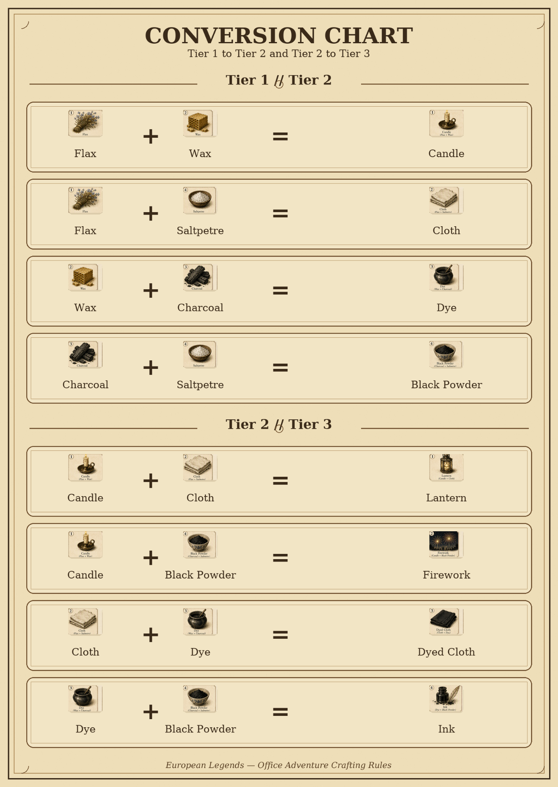
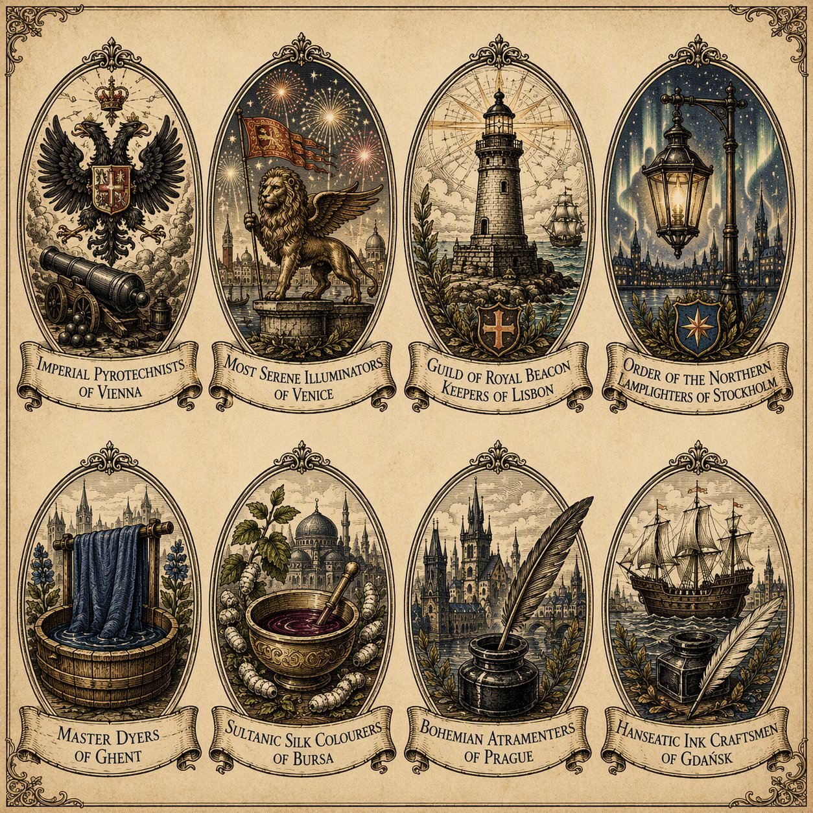

An independent balance & design review of the ruleset, through three rounds of independent review — ahead of an economic simulation of the trading and crafting system.



Revision 2 fixed real errors found in the first draft: a wrong claim about starting-hand recipes, overstated loan math, a sale-price-vs-strategic-value conflation, a missed scoring contradiction, and an unmeasured scheduling claim (later backed by a toy model).
Revision 3 added two things a further review caught as genuinely missing from revision 2: the winner's-first-pick and +5-bonus snowball mechanisms (§2.7), and confidence labels ([Established] / [Derived] / [Risk] / [Open]) throughout, so claims don't read as more settled than they are.
Revision 4 fixed a real, high-priority flaw a third review found — the corrected rotation, toy-model description, and several precision issues.
Revision 5 fixes a fourth review's findings — this one caught a claim in revision 4 that was itself checked and found false, not just imprecise:
main.Confidence labels used from here on: Established stated directly in the source rules. Derived follows deductively from the rules. Risk a credible concern, not yet quantified. Open a question the written rules can't settle — needs simulation. Not every sentence is labeled, only load-bearing claims.
EstablishedEach round, 4 activity rooms × 2 guild slots = exactly 8 slots — one per guild. Over 4 rounds that's 32 slots, exactly enough for all 8 guilds to visit all 4 rooms once each.
DerivedNothing in the rules guarantees that happens on its own — guilds choose/race for rooms, constrained only by "two other guilds already paid their participation fee" locking a room. The system has zero spare capacity.
Derived — toy model(method in §7): under a policy where guilds pick, one at a time in random order, uniformly among rooms they haven't visited that still have a free slot — full knowledge of current availability, but no negotiation or anticipation — only 38% of games finish with every guild visiting every room. This is not a bound on the real event in either direction (real players might do better via negotiation, or worse from concurrent decisions and imperfect queue visibility) — it's evidence that an allocation problem exists under this policy, not an estimate of the event's actual odds. An independent reviewer's own quick check landed within 1 point (38.4%).
| Round | Room 1 (Cloth) | Room 2 (Dye) | Room 3 (Black Powder) | Room 4 (Candle) |
|---|---|---|---|---|
| 1 | Lisbon, Stockholm | Bursa, Ghent | Gdansk, Prague | Venice, Vienna |
| 2 | Gdansk, Vienna | Venice, Prague | Lisbon, Ghent | Bursa, Stockholm |
| 3 | Ghent, Venice | Stockholm, Gdansk | Bursa, Vienna | Lisbon, Prague |
| 4 | Bursa, Prague | Lisbon, Vienna | Stockholm, Venice | Ghent, Gdansk |
Every guild's 4 opponents are 4 distinct guilds. Correction: an earlier version of this text claimed those opponents "span both other production specialties" — checked computationally, that's false: every guild here meets only 2 of the 3 non-own specialty-pairs (e.g. Lisbon meets flax and charcoal guilds, never saltpetre). Full 3-specialty coverage is only reachable by letting each guild meet its own twin exactly once — a real design option, not adopted here. What this table does guarantee: room-once-per-guild, no repeated opponent, no twin-pairing at all. This table is also the input §2.1's starting-hand fix needs.
EstablishedThe four Tier-1 materials form a 4-cycle: Flax–Wax → Candle, Wax–Charcoal → Dye, Charcoal–Saltpetre → Black Powder, Saltpetre–Flax → Cloth. Diagonal pairs don't convert to anything.
DerivedEach guild starts missing exactly one of the four types. The first draft claimed the missing type determines a single craftable Tier-2 item. That's wrong — the guild can only manufacture one card (it holds one unit of the shared "hub" item), but has a choice of two possible recipes:
| Missing material | Starting materials | Tier-2 choices (pick one) |
|---|---|---|
| Flax | Wax, Charcoal, Saltpetre | Dye or Black Powder |
| Wax | Flax, Charcoal, Saltpetre | Black Powder or Cloth |
| Charcoal | Flax, Wax, Saltpetre | Candle or Cloth |
| Saltpetre | Flax, Wax, Charcoal | Candle or Dye |
This invalidates the original recommendation to deal kits so exactly 2 guilds are missing each type — that controls the aggregate opportunity set, not what guilds actually choose. Controlled dealing gives symmetrical opportunity, not balanced demand.
| Guild | Round-1 room needs | Hand must not be missing | So hand should miss |
|---|---|---|---|
| Lisbon, Stockholm | Cloth (Flax+Saltpetre) | Flax, Saltpetre | Wax or Charcoal |
| Bursa, Ghent | Dye (Wax+Charcoal) | Wax, Charcoal | Flax or Saltpetre |
| Gdansk, Prague | Black Powder (Charcoal+Saltpetre) | Charcoal, Saltpetre | Flax or Wax |
| Venice, Vienna | Candle (Flax+Wax) | Flax, Wax | Charcoal or Saltpetre |
This guarantees every guild can pay its Round-1 fee from its opening hand. It doesn't remove randomness from the player's point of view — the organizer picks which one material to withhold, but the specific 3 items a guild ends up with still aren't announced or predictable in advance.
The first draft compared items purely by sale price (Tier 1 = 1, Tier 2 = 4, Tier 3 = 14) and concluded crafting up the chain is "strictly worth doing." That conflates sale price with strategic value — the biggest conceptual gap in the first draft.
DerivedA Tier-2 item is also the entry ticket to a room that otherwise costs 15 coins cash. Its shadow value right before a required room visit is much closer to "coins saved" than to its 4-coin liquidation price. A guild holding two Tier-2 cards can craft a Tier-3 (8→14, +6) or hold one back to skip a 15-coin cash fee — depending on which rooms remain, the second can be worth far more. Crafting up the chain before room obligations are met can be a mistake, not a free win.
This game has time-dependent, endogenous item values, not a fixed price ladder — the simulation needs to model individual item identity, not aggregate counts (§2.5, §8).
After completing a room, guilds exchange their entry item: "choose a new tier 2 item, different than the one they paid to participate."
That's a large asymmetry — holding the correct Tier-2 prerequisite may be one of the strongest strategic assets in the game. Worth being precise though: "net liquidation loss ≈ 0" is true in sale-price terms, but the strategic swing can be large either way — getting exactly the card you need next is a big win; being forced into one you don't (a reward-pool collision, §2.5) is a real loss even though the liquidation math nets to zero.
Two open questions: does a coin-paying guild also receive a reward card? And is the "3 available items" reward one pool shared by both guilds with cards removed as each picks, or does each guild see its own separate 3? Both added to §4.
DerivedThe first draft assumed every loan is 15 coins, doubled to 30. The rule lends only the missing amount. Guilds start with 10 coins, so a guild needing the fallback with its starting coins intact needs a loan of only 5, repaid as 10 — not 30. A full 15-coin loan only happens after a guild has already spent down to zero.
OpenThe stronger claim — "eliminated from contention by round 2" — was asserted without math. Honest version: loans can create negative feedback, but how severe it actually is depends on quantities the written rules don't pin down, and needs to come from simulation. Loans aren't the only such mechanism — see §2.7.
OpenThis cuts against the first draft's own claim that the recipe cycle "forces genuine cross-guild trading."
DerivedA guild that never trades can craft one Tier-2 item from its starting hand, pay into Room 1, and receive a different Tier-2 as reward. If that reward matches an unvisited room, it can chain straight through all four rooms on its own inventory plus its own Tier-1 production — no other guild required.
What can break the chain: each room seats 2 guilds sharing one reward pool of 3 cards (an interpretation — see §4), winner picks first. If both guilds want the same next-room item, the loser is forced elsewhere — creating pressure to trade or fall back to a coin payment, though not strictly requiring it, since the guild could instead craft the item itself later.
EstablishedThe 20-coin guild-special bonus and each guild's unique quest aren't defined yet. Relevant to §2.4's catch-up question and guild identity — worth finishing before final simulation runs.
The first draft treated loan debt as the negative-feedback mechanism. It isn't the only one — the other two reward guilds for winning, not just penalize for losing, so they can compound with loans rather than offset them.
Derived1. The room winner picks their Tier-2 reward first. "The winners choose first from 3 available items, the losers choose second." A guild ahead on quest skill also gets first pick of its next strategic asset (§2.3) — determining whether it can chain to its next room (§2.5) or has to trade/pay coins instead.
Derived2. The +5 room-win bonus is positively correlated with quest skill, not independent of it. It's added on top of an existing lead, not distributed independently — a guild strong at a room's specific skills gets rewarded twice for the same underlying advantage.
OpenTogether with loans, that's three mechanisms that could all push the same direction: skilled/lucky guilds get more coins, better future inventory, and avoid debt, while weaker guilds get none of that and accrue interest too. Whether this compounds into a runaway lead, or is damped by other randomness, is exactly what the simulation should measure.
DerivedThis is also why the §1 rotation fix mattered beyond capacity: the original rotation paired every guild against the same opponent all 4 rounds, letting this compounding advantage snowball repeatedly against one weaker guild. The corrected rotation doesn't eliminate the mechanism, but stops it concentrating on a single guild.
Worth testing directly: a rubber-banding variant where the loser picks their reward card first. Not a recommendation to adopt it — just a cheap comparison to isolate how much of the snowball comes from this one rule versus the +5 bonus or loans (added to §8).
10 + 4×10 + 3×10 + 10 + 10 = 100 minutes exactly, with no contingency anywhere for a long briefing, a puzzle reset, a scoring dispute, AV trouble, or congestion. For a live 40-person event this outranks any single room's internal buffer. Recommend 5–10 minutes of recoverable slack somewhere in the program.
| Room | Longer sub-quest | Bound | Buffer in 10 min |
|---|---|---|---|
| 1 – Cloth Room | Cartographer's Workshop (strict) | 7 min | ~3 min |
| 2 – Dye Room | Hall of Languages (est.) | ~6 min | ~4 min |
| 3 – Black Powder Room | Architect's Challenge (strict) | 7 min | ~3 min |
| 4 – Candle Room | Scribe's Observation | 7 min | ~3 min |
Workable on paper, but per §3.1 there's no cushion elsewhere to absorb overruns.
Reordered — the scoring contradiction is promoted to the top since it affects simulation parameters directly, not just clarity.
Conversions, fee payments, and loans all funnel through the Guildhall/GM — potentially handling production, two tiers of crafting, fee payment/booking, loans, and disputes for up to 8 guilds inside one 10-minute window, while guilds also negotiate trades in the same window.
Removed since the first draft: "the recipe graph forces cross-guild trading" (now an open question, §2.5) and the room-win bonus described as consequence-free (now qualified, §2.7).
Method (precisely, per review correction): 8 guilds, 4 rooms, 4 rounds, capacity 2/room/round. Each round, guilds process in random order and pick uniformly among rooms they haven't visited with a free slot — i.e. full knowledge of current availability, but no negotiation and no anticipation. 200,000 simulated games, seeded for reproducibility. Code: simulation/toy_scheduling_model.py.
| Metric | Result |
|---|---|
| Games where all 8 guilds visit all 4 rooms | 38.2% |
| Individual guild-slots that complete all 4 rooms | 82.3% |
| Guild-slots missing exactly 1 room | 17.6% |
| Guild-slots missing 2+ rooms | ~0% |
An independent reviewer's own check using the same approach landed at 38.4% — consistent within simulation noise.
Reading these numbers: not a prediction or bound on the real event — real players might do better (negotiation, visible queues) or worse (concurrent decisions, confusion, time pressure), and nothing here says which dominates. What it establishes: under one simple, fully-specified decentralized policy, exact capacity-equals-demand doesn't guarantee successful allocation. It's also scope-limited: this model only tests the room/seat mechanic in isolation, not its entanglement with which Tier-2 item a guild holds, coins, loans, or the previous room's reward (§2.1–§2.5) — deliberately, so 38.2% shouldn't be read as an estimate of the full economy. It exists to make the §1 risk checkable and to benchmark the fixed rotation, which reaches 100% by construction.
A simulation isn't useful design evidence unless its questions and comparison variants are specified before it's built.
Building the full model is the next step once §4's ambiguities are resolved — particularly the scoring contradiction and the coin-payment reward-card question, both of which change simulation parameters directly.